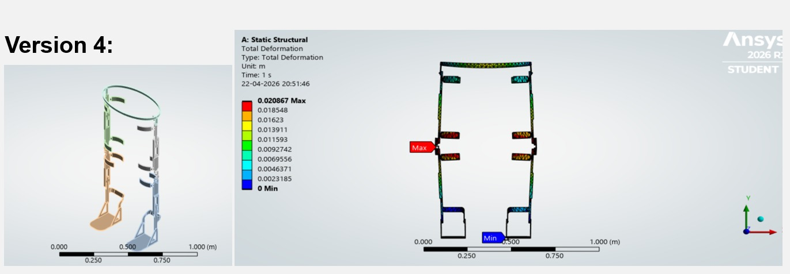
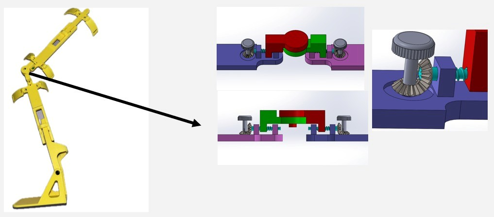
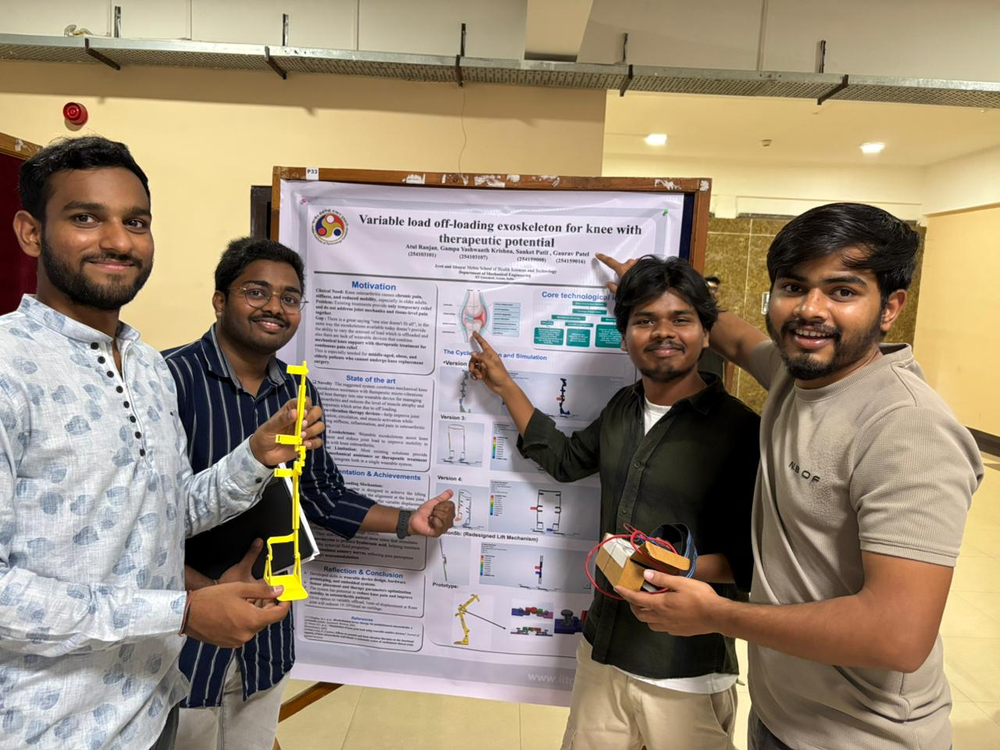

Active Flexible Compliant-Based Bionic Arm
Engineered a fully functional active bionic-arm prototype from concept to physical testing. The project focused heavily on simulating complex motion paths and optimizing structural compliance before manufacturing.
ANSYS Mechanical Stress Analysis
Before any physical manufacturing, the core compliant design was iteratively analyzed in ANSYS Mechanical. The primary objective was to evaluate stress concentrations and structural deformation under real operating conditions.
This rigorous finite element analysis (FEA) ensured the flexible components could withstand repeated actuation cycles and payload stresses without fatigue failure, validating the integrity of the complex motion paths.

Iterative stress and deformation analysis simulated in ANSYS Mechanical.
3D Printing & Assembly
Once the stress and deformation profiles were fully optimized in the simulation environment, all custom components were isolated for additive manufacturing.
The parts were carefully 3D printed and assembled to create a fully functional, active prototype. Translating the digital, compliant CAD model into a physical assembly required strict adherence to geometric tolerances to maintain the intended flexibility.

Translation of optimized CAD models into 3D-printed physical assemblies.
PD-Based Actuation & Live Testing
To ensure the bionic arm responded smoothly and safely during human-robot interaction, the control system utilizes PD-based (Proportional-Derivative) actuation.
This control strategy significantly reduced response lag and improved positional accuracy. The final compliant design was successfully validated through live physical testing, proving the reliability of the simulated complex motion paths under real-world human integration.

Live validation of responsive actuation and complex motion paths.